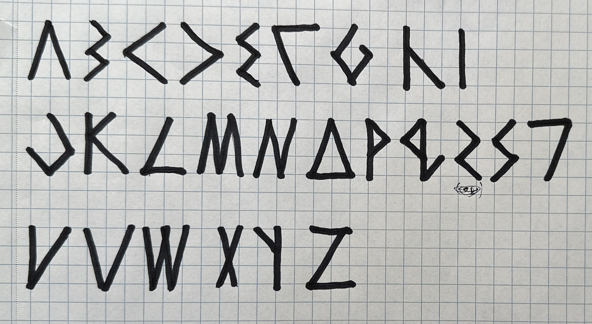
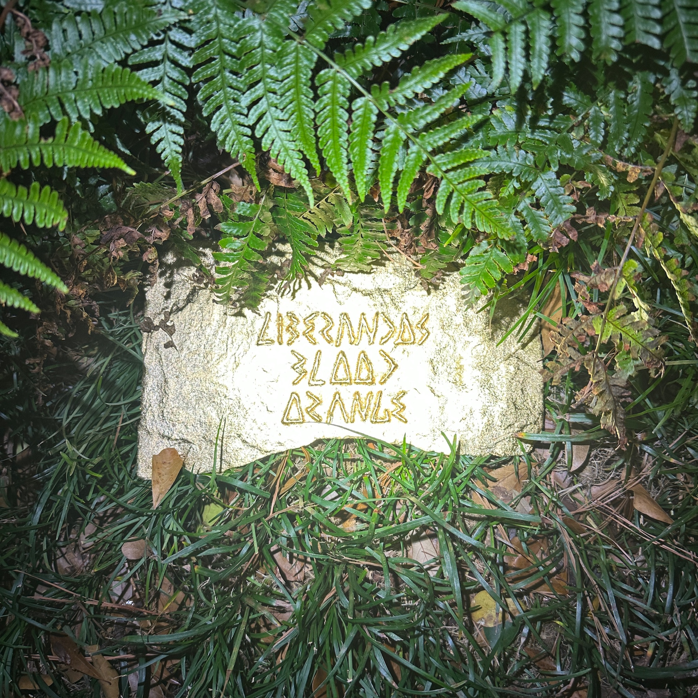
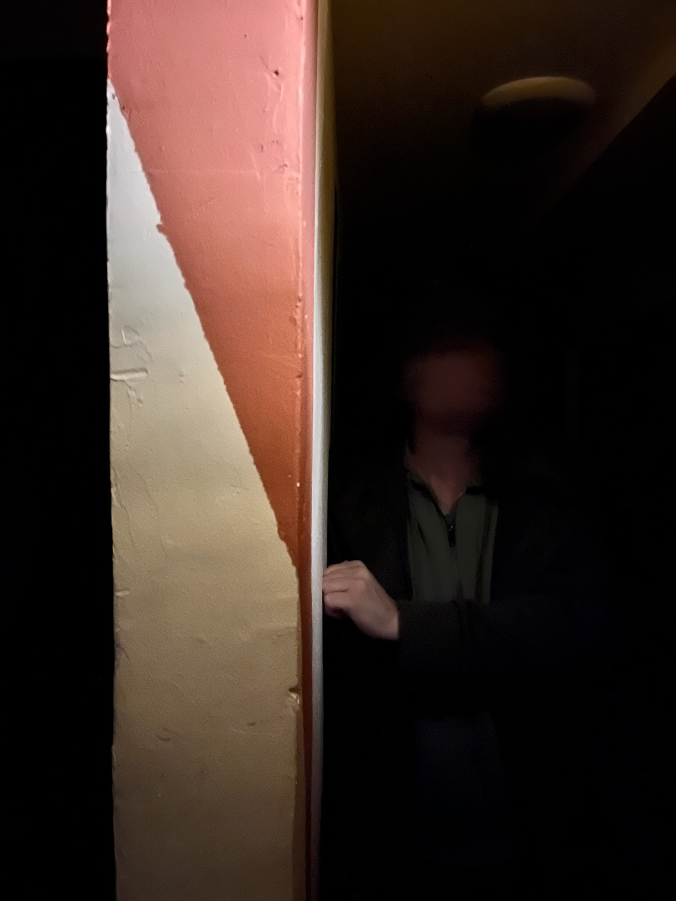
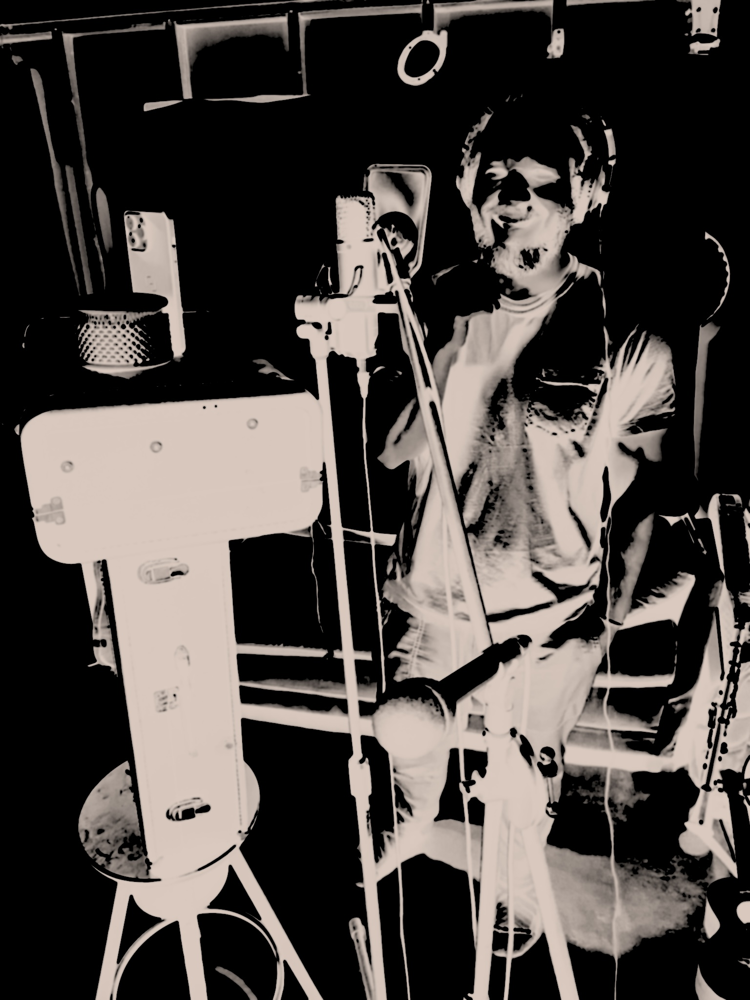
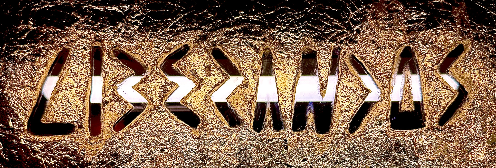
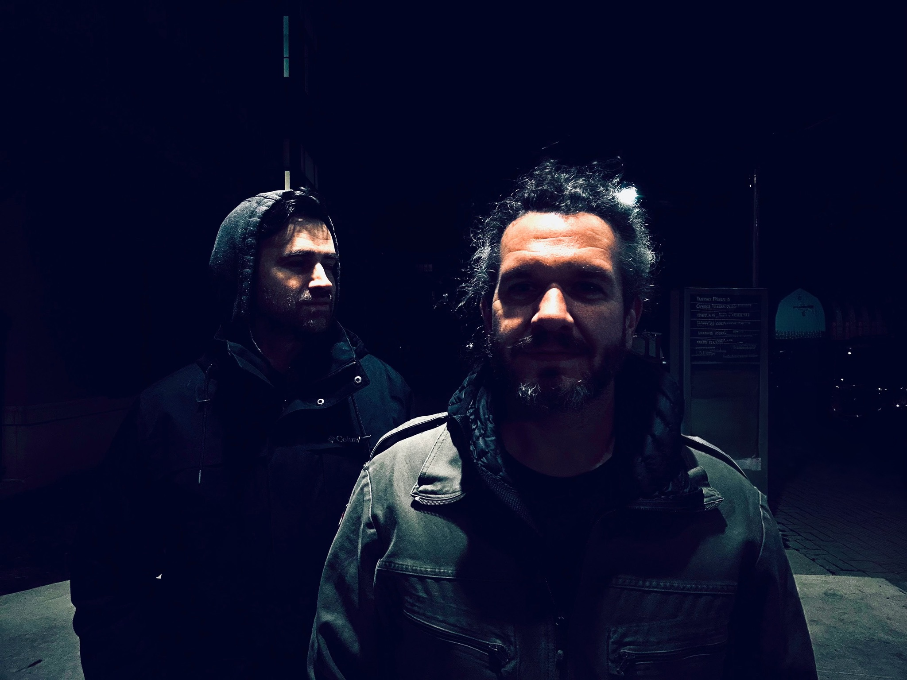

Captured Motion / Node 3626
Captured Motion / Node 3644

Recovered Still / Screenshot 4
Captured Motion / Carapace Restart
Captured Motion / Node 3665
Captured Motion / E9FC Relay


Recovered Still / Screenshot 2
Captured Motion / Canyon Restart

Recovered Still / Screenshot 3
Captured Motion / Node 4886

Recovered Still / 796417

Recovered Still / 8627

Recovered Still / 4147

Captured Motion / Node 0201

Recovered Still / FullSizeRender
Captured Motion / Node 4261
Captured Motion / Liberandos Best
Captured Motion / Video Output
Captured Motion / Arctic Deploy
mmnt_20260325...mov / micro relay
img_3626.mov / micro
img_4121.mov / micro
img_3665.mov / relay
e9fc76c1...mov / relay
img_8627.jpg / micro
img_4886.mov / micro
mmnt_20260325...mov / repeat relay
img_4261.mov / micro
fullsizerender.jpeg / micro

screenshot 5.png / micro
img_3644.mov / micro

0e3a423d...jpg / micro